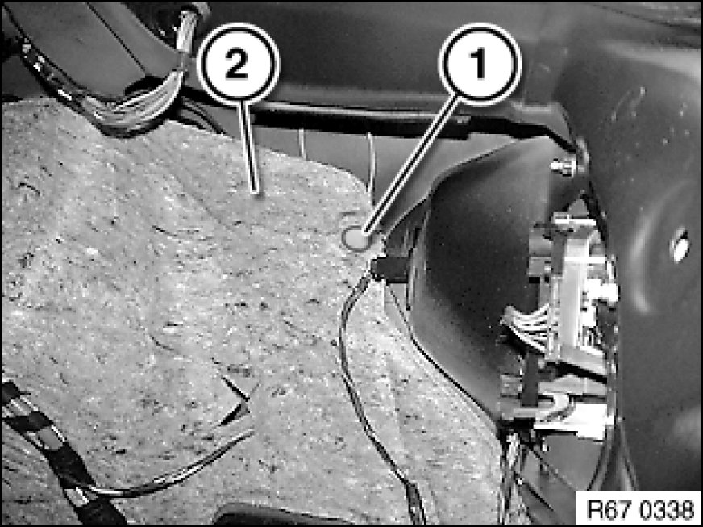
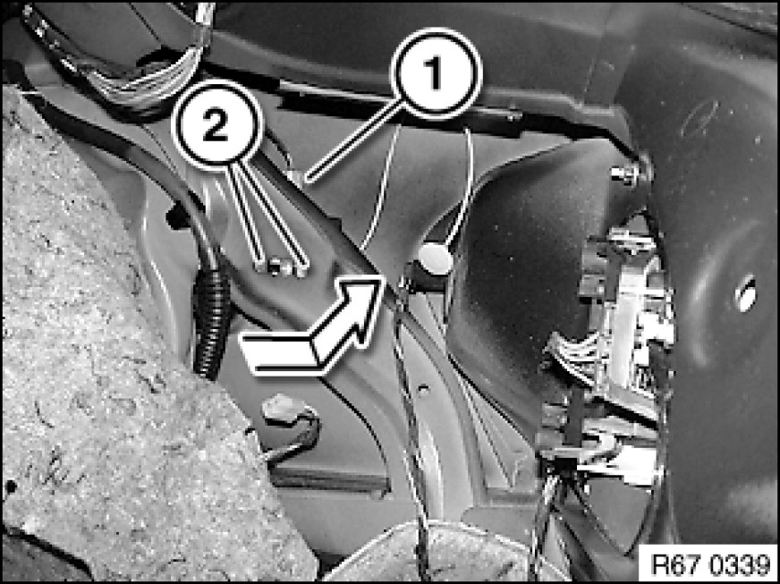
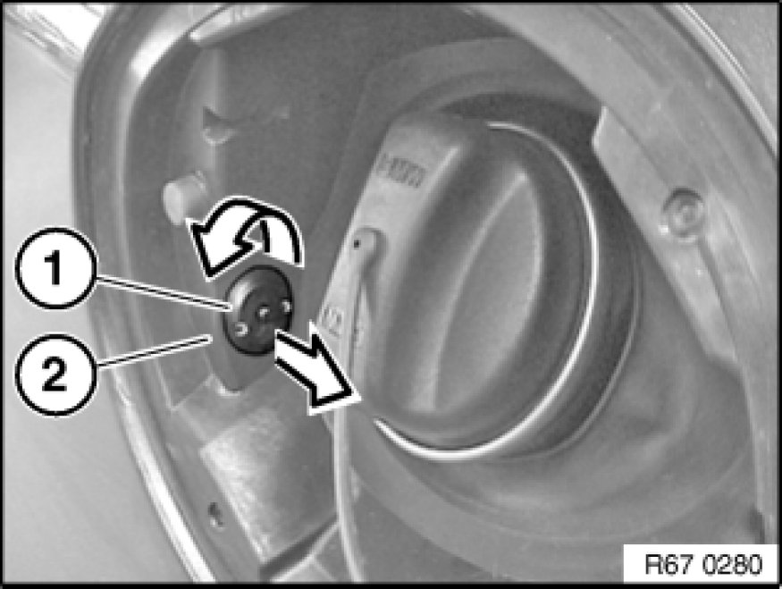
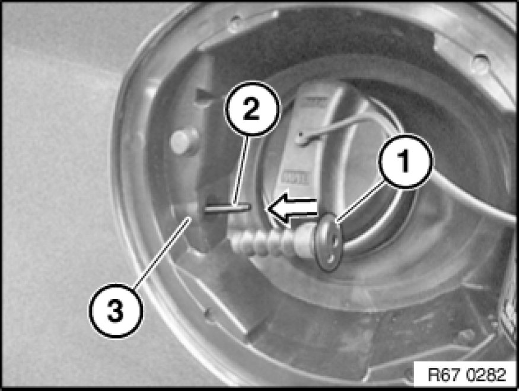
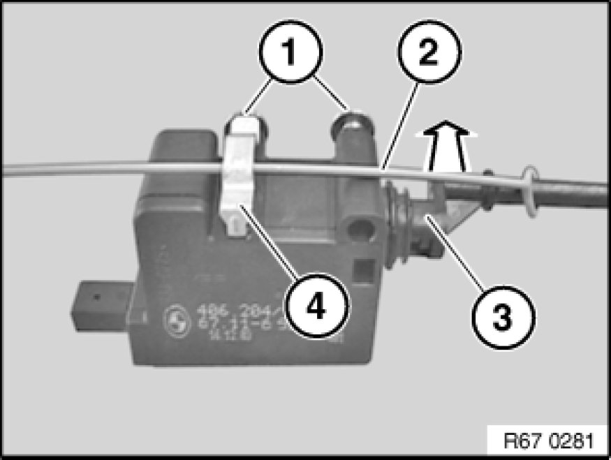

Removing and Installing/Replacing Servodrive For Tank Filler Flap
67 11 555 - Removing and installing/replacing servodrive for tank filler flap

Necessary preliminary tasks:
- Remove right luggage compartment wheel arch trim

Disengage Bowden cable for emergency actuation (1).
Fold sound insulation (2) to one side.

Disconnect plug connection (1).
Slacken screws (2)
Feed servodrive in direction of arrow out of retaining plate (4) and remove.
Installation:
Adjustment of servodrive for tank filler flap (3) possible via both elongated holes. It must be possible to lock or unlock the fuel filler flap completely.

Turn sleeve (1) with a suitable tool (e.g.: pointed pliers) approx. 45° in direction of arrow and pull out of cover housing (2).

Installation:
Slide sleeve (1) over locking pin (2).
Make sure sleeve (1) is correctly engaged in cover housing (3).

Replacement:
Release screws (1).
Disengage emergency actuation pull strap (2) from retainer (4) and remove towards front.
If necessary, unclip locking pin (3) in direction of arrow from servodrive for tank filler flap.
Unclip retainer (4) from servodrive for tank filler flap (3).